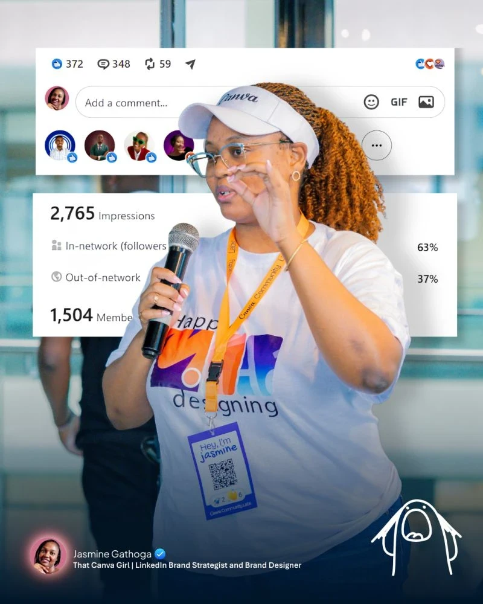

Based in Kenya, working with
people everywhere.
The short version
Most people only do half of LinkedIn. Great visuals with zero strategy, or solid strategy with a lunch-break brand. I do both halves, so you get followed, trusted and paid.
Strategy nerd, tooMy services
A 1-on-1 call on how to grow, position yourself and attract clients on LinkedIn.
Book a strategy call →Profiles, banners, carousels and flyers, built in Canva to convert, not just look cute.
100+ profiles designedFree strategy and design tips, plus lots of fun stories.
6:30am EAT, Monday to FridayBranding & Positioning on LinkedIn Kenya
Branding & Positioning on LinkedIn worldwide
LinkedIn profiles designed for creators, founders & more.
Client satisfaction, with 55% of new work from referrals.
Frequently asked questions
Usually both. Great visuals with no positioning don’t get seen, and a solid strategy with a thrown-together brand doesn’t get trusted. A strategy call is the best place to start; we’ll work out what’s missing.
Your LinkedIn profile optimised and designed: banner, featured section, carousels and flyers, all built in Canva so you can keep using them.
Because you can edit it yourself afterwards. Canva has always been my playground, and Figma comes out when a project needs it.
Yes. I’m based in Kenya and work with consultants, founders and creators wherever they are.
Follow along on LinkedIn. I share free strategy and design tips every weekday at 6:30am EAT.
Book a strategy call, or DM me “STRATEGY” on LinkedIn. Ask me anything, anytime.

Hi, I am Jazz KenyaAbout me
Canva has always been my playground. But somewhere between working on 100+ profiles I realised the ones growing and getting clients weren’t always the ones with the best designs. They were the ones who understood the game.
So I learned that too: positioning, engagement, content, all of it. Now I help consultants and service providers get strategically and visually positioned.
Testimonials
What clients wrote about working with Jasmine, straight from her LinkedIn recommendations.
Read them all on LinkedIn ↗“Now, my profile clearly positions me and communicates what I do.”
“What makes her stand out is not just her creativity but her strategy.”
“When Jasmine sent me the final files, I actually cried.”
“She has that rare blend of artistic vision and practical precision - the kind that doesn’t just make a design look good, but makes it work.”
“Jasmine’s hands are blessed. Her creativity is out of this world.”
“Everyone truly needs a Jasmine in their corner.”
“It wasn’t just the final look (which turned out amazing), it was the way she worked.”
“Talk about a designer who knows her onions? Jasmine!”
“I was instantly inspired by her creativity and professionalism.”
“She’s not just good, her brand is top-tier in canva design coaching.”
“There are designers and there are designerrrrssss. Jasmine is that designer you just never see coming.”
“She transformed my brand image into one that positioned me as an authority and gets results.”